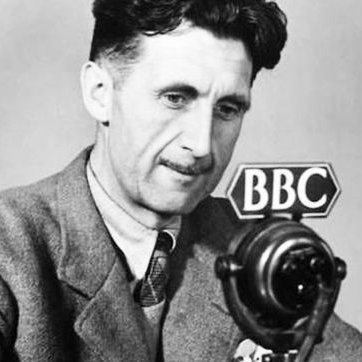
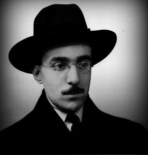

| Horror é um gênero literário, cinematográfico ou musical, que está sempre muito ligado à fantasia e à ficção especulativa, é criado com intuito de causar medo e aterrorizar. A Literatura de horror contém indissociavelmente elementos do sobrenatural muitas vezes associados a componentes típicos, por exemplo, da ficção científica. | |
|  | Ficção científica é um gênero da ficção especulativa, que normalmente lida com conceitos ficcionais e imaginativos, relacionados com o futuro, ciência e tecnologia, e seus impactos e/ou consequências em uma determinada sociedade ou em indivíduos. Conhecida também como a "literatura das ideias", baseando-se em fatos científicos e reais para compor enredos ficcionais. |
| Fantasia é um gênero da ficção em que se usa geralmente fenômenos sobrenaturais, mágicos e outros como um elemento primário do enredo, tema ou configuração. Muitas obras dentro do gênero ocorrem em mundos imaginários onde há criaturas mágicas e itens mágicos. Os acontecimentos e ações na literatura fantástica muitas vezes diferem daqueles possíveis na realidade. Em muitos casos, especialmente em trabalhos mais antigos, mas também em muitos modernos, isto é explicado por uma intervenção divina, mágica, ou de outras forças sobrenaturais. Noutros casos, como na chamada high fantasy, a história pode acontecer num mundo completamente fantástico, diferente do nosso, onde nele existe a magia, e as leis do mundo real nem sempre regem o mundo imaginário. | |
|  | A poesia, ou texto lírico, é uma das sete artes tradicionais, pela qual a linguagem humana é utilizada com fins estéticos ou críticos, ou seja, retrata algo em que tudo pode acontecer dependendo da imaginação do autor como a do leitor. A poesia compreende aspectos metafísicos e a possibilidade desses elementos transcenderem ao mundo fático. Esse é o terreno que compete verdadeiramente ao poeta. |
| O romance histórico é um gênero literário em prosa em que a narrativa ficcional se ambienta no passado. Geralmente, os romances históricos são marcados pela influência de eventos e personagens históricos no desenrolar da trama. O gênero caracteriza-se pela forma como articula os aspectos ficcionais da literatura com as pesquisas e com os fatos históricos. |